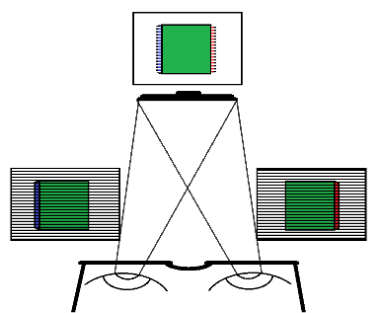
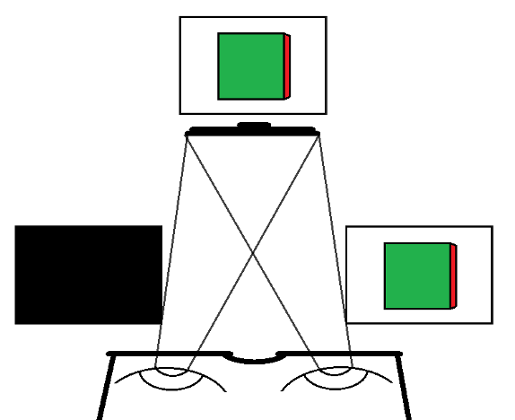

Display technologies for 6DoF Experiences
Last updated on 2024-11-06 | Edit this page
When visualising 6DoF experiences, there is a wider range of platforms which can be targetted. This include:
- Projection-based technologies
- Display-based technologies, including Head-Mounted Displays (HMD).

{kind=link}
Projection based technology
Is based on multiple projectors on flat or curved surfaces. There are multiple types of configurations including:
- Flat area
- Room-sized cube
- Immersive screen
By incorporating motion sensors, it allows to record the position (e.g. head, hands) of the viewer.
Limitation to one user.

Display-based technology
Use LCD/LED or other technologies for displaying the pixels.

{kind=link}
Some display-based technologies still utilize special glasses for stereoscopic viewing.
These use two different methods for sending information to both eyes:
- Passive 3D
- Active 3D

Passive 3D
Passive technologies blend two frames in one.
Frame display alternate lines of the frame meant both for the left and the right eye.
Passive 3D glasses have different polarization on each lens that fits with their respective lines.
Glasses are more cheaper. But they support less resolution.
![Circularly polarized glasses, used for stereoscopic viewing. © Dave Pape (CC BY-SA 4.0 Wikimedia Commons)[https://commons.wikimedia.org/wiki/File:Circularly_polarized_glasses.jpg]](https://upload.wikimedia.org/wikipedia/commons/6/66/Circularly_polarized_glasses.jpg)
{kind=link}
Active 3D
Alternate displaying frames meant for the right eye and the left eye. Glasses are synchronized.
Shutters darken the individual lenses in tandem with the image on the screen.
This technology is more expensive but has better resolution.
![Visualization how active 3D TVs work © (CC BY-SA 4.0 Wikimedia Commons)[https://en.wikipedia.org/wiki/Active_shutter_3D_system#/media/File:Active-3d-shutter-technology.gif]](https://upload.wikimedia.org/wikipedia/commons/b/bb/Active-3d-shutter-technology.gif)
{kind=link}
3D displays/laptops
3D TVs no longer produced since 2016, and there were multiple reasons for its failure.
Current developments for improving 3D screens include improving the viewing experience without using 3D glasses.

VR headsets
Headsets are built using two high-resolution OLED or LCD monitors, and other sensors. They provide separate images for each eye.
There are two attriutes of their specifications worth looking at:
Refresh rates
The majority of VR headset refresh rates range from 60 hz to 140 hz. This means that the image is refreshed 90 times per second.
However, some high-end headsets have a refresh rate of 120Hz or even 144Hz.

Resolution
Headset resolution is often described using pixels per degree (ppd).
In a similar way that pixel density is the number of physical pixels per inch (ppi) on a screen or display of a device, ppd measures the screen’s resolution as seen from an angle.
Headsets can be compared according to these specifications.
Challenge: What are the main issues when developing for headsets
Think which are some of the main challenges when thinking which platform/HDM to target for the development of immersive experiences.
When distribution for 6DoF experience, it is important to keep these specifications into consideration.